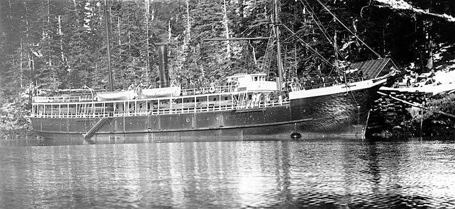
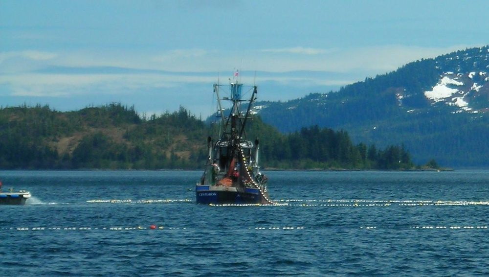

Directory / Southcentral Alaska / Prince William Sound
Prince William Sound tides & ports — Whittier, Valdez, Cordova
One page for the whole Sound: this week’s high and low tides from five NOAA stations side by side, all nine National Weather Service marine zones from Passage Canal to Hinchinbrook Entrance, live buoy readings, and the harbor, fuel, haul-out, and seafood-processor contacts for the three road/ferry towns. Times are local (AKST/AKDT). Heights are feet above Mean Lower Low Water (MLLW). For a full port directory, open the Whittier, Valdez, or Cordova page.
One tide, three towns — but nine different forecasts
The tide barely changes across the Sound. In the NOAA predictions fetched 2026-11-23 21:29 AKST, every high and low this week at Whittier, Valdez, Cordova, Busby Island and Sawmill Bay lands within 12 minutes of the others. Next low tide: Whittier 6:14 AM (3.5 ft) · Valdez 6:12 AM (3.2 ft) · Cordova 6:17 AM (3.3 ft). The biggest drop in the next five weeks is at Cordova on Thursday, December 24, 2026: a 15.8 ft high at 12:54 PM, then a −3.2 ft low at 7:41 PM — about 19.1 ft of water. Minus lows fall on 21 days between Nov 24 and Dec 28. Plan grid work and launches by your own station, but expect the same timing everywhere.
The weather is where the towns differ. NWS splits the Sound into seven inside zones plus two outside-coast zones. Passage Canal (Whittier) and Port of Valdez are often calm while Valdez Narrows, Valdez Arm, or Hinchinbrook Entrance blow. Read the zone you will actually cross. In the forecast issued 148 PM AKST Mon Nov 23 2026: Small Craft Advisory Through Tuesday Night for PKZ721; Small Craft Advisory Tuesday And Tuesday Night for PKZ711, PKZ710; no headline for PKZ723, PKZ724, PKZ726, PKZ720, PKZ722, PKZ725.
Computed from NOAA CO-OPS hi/lo predictions for 9454949, 9454240, 9454050, 9454374 and 9454764 (2026-11-24 onward) and NWS coastal waters forecast text, fetched 2026-11-23 21:29 AKST. Not for navigation.
Prince William Sound then & now
Historic

.jpg){kind=link}
Current


NOAA Whittier NOAA Valdez NOAA Cordova NOAA chart viewer View on Windy
Port Sponsor — Prince William Sound
Top placement for fuel docks, marinas, yards, and marine businesses.
$25–$50 / month
Port comparison: stations, zones, harbors
Station IDs from NOAA MDAPI; zone IDs confirmed with the api.weather.gov zone lookup (2026-11-24); harbor facts from each city’s harbor pages (links on each port page). Processor counts are verified rows in our directory, not a census.
| Port | NOAA tide station | NWS marine zones | NDBC obs | Harbor & harbormaster | Fuel | Haul-out | Seafood processors listed | Getting there |
|---|---|---|---|---|---|---|---|---|
| Whittier | NOAA 9454949 Passage Canal | PKZ723 Passage Canal · PKZ724 NW Sound · PKZ726 SW Sound | WIXA2 · PPXA2 · 46081 | City of Whittier Harbor 907-472-2327; VHF 16/68 (Pilothouse Guide); 360 slips to 60 ft; Cliffside Marina (private, 99 slips) | Shoreside Petroleum harbor fuel dock | No published travelift; Cliffside Marina hydraulic trailer haul | 2 | Road & rail through the one-lane Anton Anderson Memorial Tunnel (scheduled openings); AMHS ferry |
| Valdez | NOAA 9454240 Port Valdez | PKZ720 Port of Valdez · PKZ721 Valdez Narrows · PKZ722 Valdez Arm | VDZA2 · 46060 · 46061 | City of Valdez Harbors 907-835-4981; hail VHF 16, work Ch 7; North Basin 489 + South Basin 127 slips | Crowley Fuels, North & South harbor docks | City boat yard: 75-ton travelift + tidal grid (to 120 ft / 250 GT) | 4 | Richardson Highway (year-round road); AMHS ferry; Valdez airport |
| Cordova | NOAA 9454050 Orca Inlet | PKZ725 Central & Eastern Sound · PKZ710 Cape Suckling–Gravel Pt (outside) | CRVA2 · 46060 · 46061 | City of Cordova Harbor 907-424-6400; VHF 16, work Ch 68; office 7 days 8–5 | Shoreside Petroleum commercial fuel dock | City 150-ton travel lift + 160 ft and 180 ft tidal grids | 6 | No road to the rest of Alaska: AMHS ferry or air (CDV) |
| Tatitlek | NOAA 9454374 Busby Island (6.7 km) | PKZ722 Valdez Arm (Tatitlek Narrows) | VDZA2 · 46060 | Small state/community harbor (Alaska DOT&PF harbor list); no Pacific Tides page yet | — | — | — | Boat or air only |
| Chenega Bay | NOAA 9454764 Sawmill Bay, Evans Island (3.4 km; subordinate to Cordova) | PKZ726 Southwest Prince William Sound | 46081 · PPXA2 | Small state/community harbor (Alaska DOT&PF harbor list); no Pacific Tides page yet | — | — | — | Boat or air only |
Tuesday, November 24, 2026
| Station | Tides (local time, height above MLLW) |
|---|---|
| Whittier (Passage Canal) NOAA 9454949 | H 12:51 AM 11.8 ft · L 6:14 AM 3.5 ft · H 12:13 PM 15.4 ft · L 7:04 PM −2.4 ft |
| Valdez (Port Valdez) NOAA 9454240 | H 12:46 AM 11.4 ft · L 6:12 AM 3.2 ft · H 12:10 PM 15.1 ft · L 7:04 PM −2.7 ft |
| Cordova (Orca Inlet) NOAA 9454050 | H 12:53 AM 11.9 ft · L 6:17 AM 3.3 ft · H 12:18 PM 15.7 ft · L 7:05 PM −2.7 ft |
| Busby Island (near Tatitlek) NOAA 9454374 | H 12:44 AM 11.1 ft · L 6:10 AM 3.2 ft · H 12:08 PM 14.8 ft · L 7:02 PM −2.6 ft |
| Sawmill Bay, Evans Island (near Chenega Bay) NOAA 9454764 | H 12:50 AM 10.7 ft · L 6:20 AM 3.3 ft · H 12:15 PM 14.4 ft · L 7:08 PM −2.7 ft |
Wednesday, November 25, 2026
| Station | Tides (local time, height above MLLW) |
|---|---|
| Whittier (Passage Canal) NOAA 9454949 | H 1:39 AM 12.0 ft · L 6:58 AM 3.6 ft · H 12:57 PM 15.6 ft · L 7:49 PM −2.7 ft |
| Valdez (Port Valdez) NOAA 9454240 | H 1:35 AM 11.6 ft · L 6:57 AM 3.3 ft · H 12:54 PM 15.3 ft · L 7:49 PM −3.0 ft |
| Cordova (Orca Inlet) NOAA 9454050 | H 1:42 AM 12.2 ft · L 7:02 AM 3.3 ft · H 1:02 PM 15.9 ft · L 7:51 PM −2.9 ft |
| Busby Island (near Tatitlek) NOAA 9454374 | H 1:33 AM 11.4 ft · L 6:55 AM 3.2 ft · H 12:52 PM 15.0 ft · L 7:47 PM −2.9 ft |
| Sawmill Bay, Evans Island (near Chenega Bay) NOAA 9454764 | H 1:39 AM 11.0 ft · L 7:05 AM 3.3 ft · H 12:59 PM 14.7 ft · L 7:54 PM −2.9 ft |
Thursday, November 26, 2026
| Station | Tides (local time, height above MLLW) |
|---|---|
| Whittier (Passage Canal) NOAA 9454949 | H 2:27 AM 12.0 ft · L 7:45 AM 3.8 ft · H 1:42 PM 15.4 ft · L 8:37 PM −2.5 ft |
| Valdez (Port Valdez) NOAA 9454240 | H 2:23 AM 11.6 ft · L 7:44 AM 3.4 ft · H 1:40 PM 15.1 ft · L 8:36 PM −2.8 ft |
| Cordova (Orca Inlet) NOAA 9454050 | H 2:31 AM 12.2 ft · L 7:49 AM 3.5 ft · H 1:49 PM 15.7 ft · L 8:39 PM −2.7 ft |
| Busby Island (near Tatitlek) NOAA 9454374 | H 2:21 AM 11.4 ft · L 7:42 AM 3.4 ft · H 1:38 PM 14.8 ft · L 8:34 PM −2.7 ft |
| Sawmill Bay, Evans Island (near Chenega Bay) NOAA 9454764 | H 2:28 AM 11.0 ft · L 7:52 AM 3.5 ft · H 1:46 PM 14.5 ft · L 8:42 PM −2.7 ft |
Friday, November 27, 2026
| Station | Tides (local time, height above MLLW) |
|---|---|
| Whittier (Passage Canal) NOAA 9454949 | H 3:16 AM 11.8 ft · L 8:35 AM 3.9 ft · H 2:29 PM 14.7 ft · L 9:26 PM −2.0 ft |
| Valdez (Port Valdez) NOAA 9454240 | H 3:13 AM 11.4 ft · L 8:34 AM 3.7 ft · H 2:28 PM 14.5 ft · L 9:25 PM −2.2 ft |
| Cordova (Orca Inlet) NOAA 9454050 | H 3:21 AM 12.0 ft · L 8:39 AM 3.7 ft · H 2:37 PM 15.1 ft · L 9:28 PM −2.2 ft |
| Busby Island (near Tatitlek) NOAA 9454374 | H 3:11 AM 11.2 ft · L 8:32 AM 3.6 ft · H 2:26 PM 14.2 ft · L 9:23 PM −2.2 ft |
| Sawmill Bay, Evans Island (near Chenega Bay) NOAA 9454764 | H 3:18 AM 10.8 ft · L 8:42 AM 3.7 ft · H 2:34 PM 13.8 ft · L 9:31 PM −2.2 ft |
Saturday, November 28, 2026
| Station | Tides (local time, height above MLLW) |
|---|---|
| Whittier (Passage Canal) NOAA 9454949 | H 4:08 AM 11.4 ft · L 9:30 AM 4.1 ft · H 3:20 PM 13.7 ft · L 10:18 PM −1.2 ft |
| Valdez (Port Valdez) NOAA 9454240 | H 4:06 AM 11.1 ft · L 9:28 AM 3.9 ft · H 3:19 PM 13.5 ft · L 10:17 PM −1.4 ft |
| Cordova (Orca Inlet) NOAA 9454050 | H 4:13 AM 11.7 ft · L 9:33 AM 4.0 ft · H 3:29 PM 14.0 ft · L 10:19 PM −1.3 ft |
| Busby Island (near Tatitlek) NOAA 9454374 | H 4:04 AM 10.9 ft · L 9:26 AM 3.8 ft · H 3:17 PM 13.2 ft · L 10:15 PM −1.3 ft |
| Sawmill Bay, Evans Island (near Chenega Bay) NOAA 9454764 | H 4:10 AM 10.5 ft · L 9:36 AM 4.0 ft · H 3:26 PM 12.8 ft · L 10:22 PM −1.3 ft |
Sunday, November 29, 2026
| Station | Tides (local time, height above MLLW) |
|---|---|
| Whittier (Passage Canal) NOAA 9454949 | H 5:08 AM 11.1 ft · L 10:30 AM 4.3 ft · H 4:20 PM 12.3 ft · L 11:10 PM −0.2 ft |
| Valdez (Port Valdez) NOAA 9454240 | H 5:06 AM 10.9 ft · L 10:28 AM 4.2 ft · H 4:20 PM 12.1 ft · L 11:10 PM −0.3 ft |
| Cordova (Orca Inlet) NOAA 9454050 | H 5:12 AM 11.4 ft · L 10:32 AM 4.3 ft · H 4:28 PM 12.7 ft · L 11:12 PM −0.2 ft |
| Busby Island (near Tatitlek) NOAA 9454374 | H 5:04 AM 10.7 ft · L 10:26 AM 4.1 ft · H 4:18 PM 11.9 ft · L 11:08 PM −0.3 ft |
| Sawmill Bay, Evans Island (near Chenega Bay) NOAA 9454764 | H 5:09 AM 10.2 ft · L 10:35 AM 4.3 ft · H 4:25 PM 11.5 ft · L 11:15 PM −0.2 ft |
Monday, November 30, 2026
| Station | Tides (local time, height above MLLW) |
|---|---|
| Whittier (Passage Canal) NOAA 9454949 | H 6:13 AM 11.0 ft · L 11:36 AM 4.3 ft · H 5:39 PM 10.9 ft |
| Valdez (Port Valdez) NOAA 9454240 | H 6:11 AM 10.9 ft · L 11:36 AM 4.3 ft · H 5:37 PM 10.8 ft |
| Cordova (Orca Inlet) NOAA 9454050 | H 6:16 AM 11.4 ft · L 11:38 AM 4.4 ft · H 5:44 PM 11.3 ft |
| Busby Island (near Tatitlek) NOAA 9454374 | H 6:09 AM 10.7 ft · L 11:34 AM 4.2 ft · H 5:35 PM 10.6 ft |
| Sawmill Bay, Evans Island (near Chenega Bay) NOAA 9454764 | H 6:13 AM 10.2 ft · L 11:41 AM 4.4 ft · H 5:41 PM 10.1 ft |
Tuesday, December 1, 2026
| Station | Tides (local time, height above MLLW) |
|---|---|
| Whittier (Passage Canal) NOAA 9454949 | L 12:05 AM 0.9 ft · H 7:16 AM 11.2 ft · L 12:50 PM 4.1 ft · H 7:10 PM 9.9 ft |
| Valdez (Port Valdez) NOAA 9454240 | L 12:05 AM 0.8 ft · H 7:13 AM 11.1 ft · L 12:52 PM 4.0 ft · H 7:05 PM 9.8 ft |
| Cordova (Orca Inlet) NOAA 9454050 | L 12:07 AM 0.9 ft · H 7:19 AM 11.6 ft · L 12:52 PM 4.2 ft · H 7:11 PM 10.3 ft |
| Busby Island (near Tatitlek) NOAA 9454374 | L 12:03 AM 0.8 ft · H 7:11 AM 10.9 ft · L 12:50 PM 4.0 ft · H 7:03 PM 9.6 ft |
| Sawmill Bay, Evans Island (near Chenega Bay) NOAA 9454764 | L 12:10 AM 0.9 ft · H 7:16 AM 10.4 ft · L 12:55 PM 4.2 ft · H 7:08 PM 9.1 ft |
Tide data: NOAA CO-OPS stations 9454949, 9454240, 9454050, 9454374 and 9454764, predictions (hi/lo, MLLW, local standard/daylight time). H = high, L = low. Refreshed with each nightly build; snapshot fetched 2026-11-23 21:29 AKST.
Marine weather & cameras
NWS marine forecast — Passage Canal (PKZ723)
For Whittier. Issued 148 PM AKST Mon Nov 23 2026. Snapshot fetched 2026-11-23 21:29 AKST from NWS text product. Official zone forecast · Raw text
- .TONIGHT...W wind 15 kt. Gusts to 30 kt near Whittier. Seas 2 ft. Freezing spray.
- .TUE...W wind 15 kt in the morning becoming variable less than 10 kt. Gusts to 30 kt near Whittier. Seas 2 ft.
- .TUE NIGHT...Variable wind 10 kt becoming W 20 kt after midnight. Gusts to 30 kt near Whittier. Seas 2 ft.
- .WED...W wind 15 kt. Seas 2 ft.
NWS marine forecast — Northwest Prince William Sound (PKZ724)
For Whittier / NW Sound. Issued 148 PM AKST Mon Nov 23 2026. Snapshot fetched 2026-11-23 21:29 AKST from NWS text product. Official zone forecast · Raw text
- .TONIGHT...NW wind 10 kt. Seas 2 ft.
- .TUE...N wind 10 kt in the morning becoming variable less than 10 kt. Seas 2 ft.
- .TUE NIGHT...NW wind 10 kt. Seas 2 ft.
- .WED...N wind 10 kt. Seas 2 ft.
NWS marine forecast — Southwest Prince William Sound (PKZ726)
For Chenega Bay / SW Sound. Issued 148 PM AKST Mon Nov 23 2026. Snapshot fetched 2026-11-23 21:29 AKST from NWS text product. Official zone forecast · Raw text
- .TONIGHT...N wind 10 kt. Seas 2 ft.
- .TUE...N wind 20 kt. Seas 3 ft.
- .TUE NIGHT...N wind 15 kt diminishing to 10 kt after midnight. Seas 2 ft.
- .WED...N wind 15 kt. Seas 2 ft.
NWS marine forecast — Port of Valdez (PKZ720)
For Valdez. Issued 148 PM AKST Mon Nov 23 2026. Snapshot fetched 2026-11-23 21:29 AKST from NWS text product. Official zone forecast · Raw text
- .TONIGHT...NE wind 10 kt. Seas 2 ft.
- .TUE...NE wind 10 kt. Seas 2 ft.
- .TUE NIGHT...NE wind 10 kt. Seas 2 ft.
- .WED AND WED NIGHT...NE wind 10 kt. Seas 2 ft.
NWS marine forecast — Valdez Narrows (PKZ721)
For Valdez. Issued 148 PM AKST Mon Nov 23 2026. Snapshot fetched 2026-11-23 21:29 AKST from NWS text product. Official zone forecast · Raw text
...SMALL CRAFT ADVISORY THROUGH TUESDAY NIGHT...
- .TONIGHT...NE wind 30 kt. Seas 3 ft. Freezing spray.
- .TUE...N wind 30 kt. Seas 3 ft.
- .TUE NIGHT...NE wind 25 kt. Seas 3 ft.
- .WED...N wind 30 kt. Seas 3 ft.
NWS marine forecast — Valdez Arm (PKZ722)
For Valdez / Tatitlek. Issued 148 PM AKST Mon Nov 23 2026. Snapshot fetched 2026-11-23 21:29 AKST from NWS text product. Official zone forecast · Raw text
- .TONIGHT...NE wind 20 kt. Seas 4 ft.
- .TUE...NE wind 15 kt. Seas 3 ft.
- .TUE NIGHT...NE wind 15 kt. Seas 3 ft.
- .WED AND WED NIGHT...NE wind 15 kt. Seas 3 ft.
NWS marine forecast — Central and Eastern Prince William Sound (PKZ725)
For Cordova / central Sound. Issued 148 PM AKST Mon Nov 23 2026. Snapshot fetched 2026-11-23 21:29 AKST from NWS text product. Official zone forecast · Raw text
- .TONIGHT...N wind 10 kt. Seas 2 ft.
- .TUE...NE wind 10 kt. Seas 2 ft.
- .TUE NIGHT...NW wind 10 kt. Seas 2 ft.
- .WED AND WED NIGHT...NE wind 10 kt. Seas 2 ft.
NWS marine forecast — Gravel Point to Cape Cleare out to 15 NM (PKZ711)
For Hinchinbrook Entrance (outside). Issued 148 PM AKST Mon Nov 23 2026. Snapshot fetched 2026-11-23 21:29 AKST from NWS text product. Official zone forecast · Raw text
...SMALL CRAFT ADVISORY TUESDAY AND TUESDAY NIGHT...
- .TONIGHT...Variable wind 10 kt. Seas 6 ft.
- .TUE...NE wind 25 kt. Seas 8 ft building to 13 ft in the afternoon.
- .TUE NIGHT...N wind 15 kt. Seas 12 ft.
- .WED...NE wind 20 kt. Seas 13 ft.
NWS marine forecast — Cape Suckling to Gravel Point out to 15 NM (PKZ710)
For Cordova / Copper River Delta (outside). Issued 148 PM AKST Mon Nov 23 2026. Snapshot fetched 2026-11-23 21:29 AKST from NWS text product. Official zone forecast · Raw text
...SMALL CRAFT ADVISORY TUESDAY AND TUESDAY NIGHT...
- .TONIGHT...NE wind 20 kt. Seas 6 ft. Freezing spray.
- .TUE...NE wind 20 kt. Seas 8 ft building to 13 ft in the afternoon.
- .TUE NIGHT...NE wind 20 kt. Seas 11 ft.
- .WED...NE wind 25 kt. Seas 13 ft.
Nearby NDBC observation — Whittier AMHS terminal (WIXA2)
wind 220°, 24 kt, gust 37 kt, air 38°F, 999.6 hPa
Observation time 2026-11-23 21:02 AKST (converted to AKST). Attribution: NOAA NDBC station WIXA2. Snapshot fetched 2026-11-23 21:29 AKST.
Nearby NDBC observation — Point Pigot (PPXA2)
wind 280°, 11 kt, gust 17 kt, air 36°F, 999.6 hPa
Observation time 2026-11-23 21:02 AKST (converted to AKST). Attribution: NOAA NDBC station PPXA2. Snapshot fetched 2026-11-23 21:29 AKST.
Nearby NDBC observation — Western Prince William Sound buoy (46081)
wind 30°, 6 kt, gust 6 kt, air 34°F, 999.5 hPa
Observation time 2026-11-23 20:40 AKST (converted to AKST). Attribution: NOAA NDBC station 46081. Snapshot fetched 2026-11-23 21:29 AKST.
Nearby NDBC observation — Valdez (VDZA2, NOAA 9454240)
wind 50°, 3 kt, gust 6 kt, 1000.6 hPa
Observation time 2026-11-23 20:48 AKST (converted to AKST). Attribution: NOAA NDBC station VDZA2. Snapshot fetched 2026-11-23 21:29 AKST.
Nearby NDBC observation — West Orca Bay buoy (46060)
wind 330°, 14 kt, gust 17 kt, 998.4 hPa
Observation time 2026-11-23 20:40 AKST (converted to AKST). Attribution: NOAA NDBC station 46060. Snapshot fetched 2026-11-23 21:29 AKST.
Nearby NDBC observation — Seal Rocks buoy (46061, Hinchinbrook Entrance)
wind 340°, 14 kt, gust 16 kt, seas 5.2 ft, 999.0 hPa, water 46°F
Observation time 2026-11-23 20:40 AKST (converted to AKST). Attribution: NOAA NDBC station 46061. Snapshot fetched 2026-11-23 21:29 AKST.
Nearby NDBC observation — Cordova (CRVA2, NOAA 9454050)
0 kt, gust 3 kt, 998.2 hPa
Observation time 2026-11-23 20:48 AKST (converted to AKST). Attribution: NOAA NDBC station CRVA2. Snapshot fetched 2026-11-23 21:29 AKST.
Harbor webcams
- Borealis Broadband — Whittier Harbor cam (free public live view; link only)
- Prince William Sound Salt Co. — Whittier 360° harbor cam (free public; link only)
- Cliffside Marina web cams (Whittier) (free public page; link only)
- City of Valdez live cams — South Boat Harbor (free public YouTube stream; link only)
- FAA WeatherCams — Whittier (PAWR) · Valdez (PAVD) · Cordova (PACV) (free public; may read “image not available” in winter darkness)
Sound-wide boater notes (official links)
- Alaska Marine Highway: the ferry links Whittier, Valdez, and Cordova (and is Cordova’s only surface link).
- Anton Anderson Memorial Tunnel: Whittier road access runs on a posted schedule; plan haul-outs and trailer trips around it.
- Barry Arm landslide & tsunami hazard (Alaska DGGS): read before running up Port Wells or Harriman Fiord.
- ADF&G Prince William Sound & Copper River commercial fisheries: openers and announcements from the Cordova office.
- Prince William Sound Regional Citizens’ Advisory Council: oil-tanker and terminal oversight for the Sound.
- NOAA ENC chart viewer (Prince William Sound is on NOAA chart 16700; we link to NOAA’s viewer and do not host charts).
Prince William Sound marine directory
Harbors, fuel, yards, marine services, and seafood processors in Whittier, Valdez, and Cordova — 70 verified public listings pulled from each port’s directory (each row has a public source in our data file). Groceries, lodging, and other shore needs are on each port page. List free · Get featured ($10/mo or $100/yr)
Marine services
Moorage & marinas
Seafood processors & buyers
Fuel docks
Shipyards & haul-outs
Boat repair & mechanics
Marine suppliers & chandleries
Electronics sales & installation
Welding & fabrication
Canvas & upholstery
No verified listing yet in the three Sound towns — list your business free.
Surveyors
Towing & salvage
Ice & bait
Fishing charters
Getting there: ferry, rail, air & water taxi
Listings are a courtesy, not an endorsement. Basic listings are free; a Featured listing is $10/month or $100/year. For corrections or a free listing, contact J.L. Miller at pacifictides.ak@gmail.com (email only).
Local news — Prince William Sound
Plain links to local outlets. Always check the source for the latest. Local news partners welcome.
- The Cordova Times (Prince William Sound’s oldest newspaper, est. 1914)
- KCHU Public Radio (Valdez, with translators in Cordova, Whittier, Tatitlek, and Chenega Bay)
- KLAM-AM / KCDV-FM Cordova Radio
- Anchorage Daily News
- Alaska Public Media
- Alaska's News Source
- Alaska Beacon
Free weekly tides & marine weather
Get a short email for your port. We do not sell your email. Privacy.
Mailing list powered by Buttondown.
Boating gear on Amazon
As an Amazon Associate I earn from qualifying purchases.
Helpful search links for common gear. Prices and availability are on Amazon.
Prince William Sound port pages
Other Alaska ports
Sources
- NOAA CO-OPS stations (MDAPI, verified 2026-11-24): 9454949 Whittier, Passage Canal; 9454240 Valdez, Port Valdez; 9454050 Cordova; 9454374 Busby Island (chart 16707); 9454764 Sawmill Bay, Evans Island (subordinate to 9454050)
- Predictions API:
api.tidesandcurrents.noaa.gov/api/prod/datagetter(product=predictions, interval=hilo, datum=MLLW, time_zone=lst_ldt) - NWS Anchorage coastal waters forecast zones PKZ720, PKZ721, PKZ722, PKZ723, PKZ724, PKZ725, PKZ726 (inside the Sound) and PKZ711, PKZ710 (outside coast); zones confirmed via the api.weather.gov zone lookup
- NDBC observations: WIXA2, PPXA2, 46081, VDZA2, 46060, 46061, CRVA2
- Harbor facts: City of Whittier, City of Valdez, and City of Cordova harbor pages (see each port page for check dates)
- Directory:
data/businesses.csvrows for port_slug whittier, valdez, cordova, each with its public source URL - Photos: Anders Beer Wilse / University of Washington Libraries (public domain); Cart5819 (public domain) via Wikimedia Commons. Graphics: original Pacific Tides artwork.